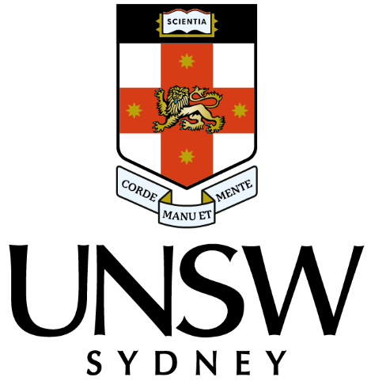

Commonwealth Bank of Australia
Software Engineer
Mar 2023 - Current
- Delivered new CRUD operations across edge and app-tier .NET APIs for the Netbank digital credit card switch feature
- Ownership of Apache Kafka streamer and .NET APIs from development to production post deployment, liaising with DevOps team to ensure smooth deployment process
- Upskilled on Kafka and contributed to critical features and bug fixes, all within a week prior to production deployment
- Addressed regular production bugs and improvements in existing .NET services using Splunk to identify bugs and TeamCity/Octopus pipelines to deploy
Languages: C#, Java
Tools: .NET Core/Framework, Kafka, Git, Azure, Splunk, TeamCity
Graduate Software Engineer
Sep 2022 - Mar 2023
- Delivered new API endpoints consumed by the CommBank mobile app targeted towards digital issuance of debit and credit cards
- Uplifted code coverage to 100% for new and existing endpoints via unit, integration, and acceptance tests
- Contributed to Continuous Improvement initiatives: upgraded older APIs to newer .NET versions, refactoring, documentation of internal tools usage
- Won 1st place out of 24 submissions for a feature-led pitch for the Commbank mobile app
Languages: C#
Tools: .NET Core/Framework, Git, Azure, Splunk, TeamCity
Graduate Software/Site Reliability Engineer
Feb 2022 - Sep 2022
- Produced a custom GitLab Helm chart with automated CI pipeline, backups, and DNS provisioning, deployed to a Kubernetes cluster and increasing user capacity tenfold
- Deployed a Docusaurus site generator for hosting SRE content on AWS and configured a Jenkins CI/CD, optimising iteration time from an hour to < 5 minutes
- Upskilled to build a Golang URL Shortener in a Docker container
- Onboarded 6 new-starters by writing shell scripts to automate software setup and created introductory labs for Golang, Docker, and Kubernetes, reducing onboarding time from 4 weeks to 5 days
Languages: Golang, Shell Scripting
Tools: AWS, Docker, Git, GitHub, GitLab, Helm, Jenkins, NGINX

The University of New South Wales
Engineering Research Assistant
Sep 2021 - Feb 2022
- A joint venture between UNSW and DSTG researching distributed anomaly detection methods for satellite communication networks
- Developed an understanding of real-world implications that cause anomalies within satellite communications, including weather, geolocation, and hardware characteristics
- Implemented and modelled advanced digital signal processing algorithms to detect such anomalies in MATLAB
- Produced a 20+ page literature review on existing distributed anomaly detection methods in network domains such as computers, mobiles, wireless sensors, and IoT
- Produced a 30+ page report detailing 1 year's worth of work conducted by the team, explanation of algorithms implemented and results
- Provided weekly updates to stakeholders from UNSW and DSTG to meet deliverables on time
- Tech stack: MATLAB
Languages: Golang, Shell Scripting
Tools: AWS, Docker, Git, GitHub, GitLab, Grafana, Helm, Jenkins, NGINX, Prometheus